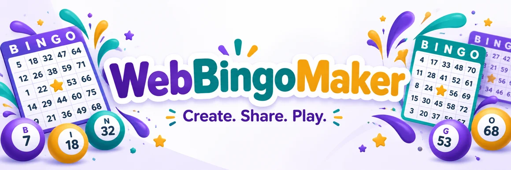
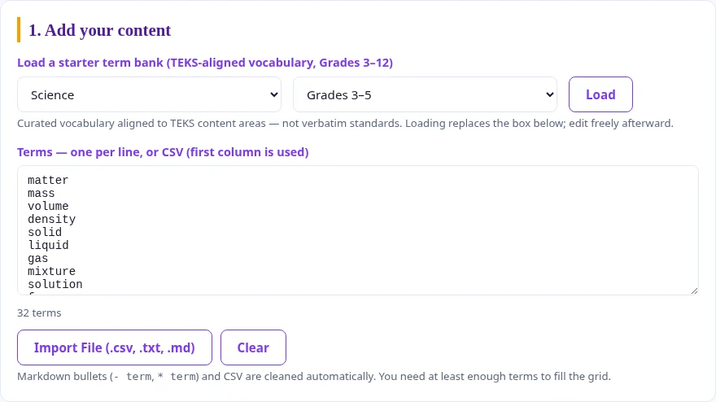
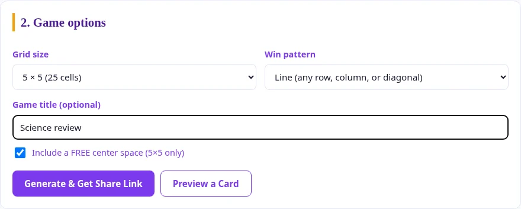
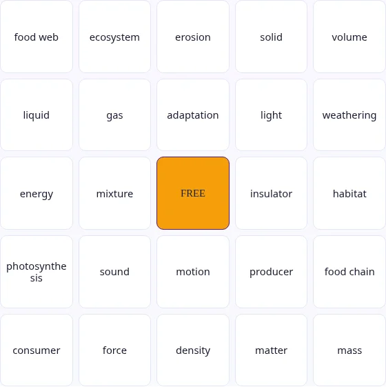
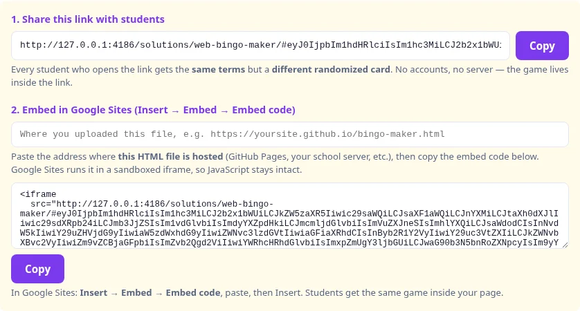

One link · Randomized cards · No accounts
I use WebBingoMaker to turn a familiar word list into a shared classroom activity. I want the first impression to be simple: this is a classroom game starter, not another complicated platform. The promise is right there on the slide. Paste your terms, generate a card, and share one link with the class. That matters because teachers do not need another tool that takes longer to prepare than the activity itself. Here, the starting point is a list of words or concepts you already have. The next slide pulls that idea into the everyday classroom problem this tool solves.
I usually have the vocabulary before I have the activity. Most teachers already have the hard part done: they have the vocabulary list, review terms, or concepts from the unit. What usually slows things down is the packaging. You copy terms into a template, shuffle the cards, print versions, or send files around. WebBingoMaker trims that down to the part that matters. Paste the list, pick the game options, and generate the share link. I would use this when I need something quick that still feels like an activity, a focused review activity. Next, I show the workflow in three moves.
Paste a list, import a file, or load a starter bank.
Pick a grid and the winning pattern.
Everyone gets the same terms in a randomized layout.
Start with one list from your next lesson.
I work through three moves: paste, generate, and share. I like this framing because it keeps the explanation from turning into a feature tour. A feature tour can be useful later, but for teachers, the first question is usually whether the tool fits into the time they actually have. It does. Students can open the same link and get the same set of terms arranged on randomized cards. That keeps preparation simple while still giving students their own card to play. Now I will slow down and show what teachers can put into the tool.
You can edit the terms before you generate a game.

Here, I am focusing on input. Teachers can paste terms one per line, or use a file such as CSV, TXT, or Markdown. That is more useful than it may sound, because classroom content lives in odd places: copied from a document, exported from a spreadsheet, or gathered from notes. The game provides Markdown bullets and CSV are cleaned automatically, with the first column used for CSV. That helps keep the tool forgiving. You do not need to format everything perfectly before you start. The next slide moves from the content list to the game choices.
Choose a winning pattern and an optional free center on five-by-five cards.

I choose the grid that fits the time available. WebBingoMaker gives you three grid sizes: three by three, four by four, and five by five. That matters because not every class activity needs a full classic bingo card. A short vocabulary warm-up might only need nine cells. A larger review before a test might call for the full twenty-five-cell version with a FREE center space. I like that the choices are simple. You are not designing a game system. You are picking the size that matches the time and purpose. Next, I show what happens after students open the link.
The link carries the terms and game options. Students do not need accounts.

I share one link with everyone. The vocabulary and game choices travel inside that link, and each participant gets a randomized arrangement. The class uses the same content without needing identical cards. Students can tap squares as I call clues, print a card, or request a new random card. I explain the winning pattern before we begin so everyone knows what to look for. There is no account setup or live teacher dashboard to manage. I still lead the clues and check a claimed bingo with the student. Next, I will connect that simple workflow to a few familiar classroom activities.
Call a definition. Students identify the matching term.
Mix key people, places, formulas, and ideas.
Start with a short round of retrieval practice.
Let a small group practice and explain its choices.
I can use the same workflow in several parts of a lesson. I would not save WebBingoMaker only for special review days. It works for vocabulary, unit review, warm-ups, and stations because the setup is light. That matters. A tool that only works when you have a lot of prep time will sit unused most of the year. The best use may be retrieval practice: students have to recognize terms, listen for clues, and connect the called item to the card. The activity still feels playful, but it is tied to academic content. Next, I show a teacher-ready play pattern.
“The process plants use to turn light into food.”
Students mark photosynthesis.
I can run a short round without overplanning it. The small teacher move here is to call clues, not just answers. If the square says “photosynthesis,” I might say, “This is the process plants use to make food from light, water, and carbon dioxide.” Then students have to retrieve the term. That turns the game into a better review activity. You can also ask students to explain why they marked a square before you keep going. That quick pause is where the learning shows up. The next slide makes the case for why this is worth using.
The language switcher changes the interface. Your terms stay as you wrote them.

I can share the generated link anywhere students already find their class materials. If I use Google Sites, I can copy the embed code and place the same game inside a page. I test the published page before class so I know it opens where I expect. The language switcher changes the interface without translating or replacing my vocabulary. That lets me keep subject-specific terms in the language I am teaching. I also remind students that opening the link creates a randomized card; it is not a teacher-controlled live room. We can now make one small game and try a round together.
I would keep the first attempt small. I would not start by building a giant review game for an entire semester. I would start with tomorrow’s terms: at least nine terms for a small grid, sixteen for a medium grid, or twenty-four with a free center from the current lesson. Paste them in, generate the card, and share the link. After that first round, it becomes easier to see where the tool belongs in your routine. We can give students a quick, shared way to rehearse the language and ideas they need to remember.